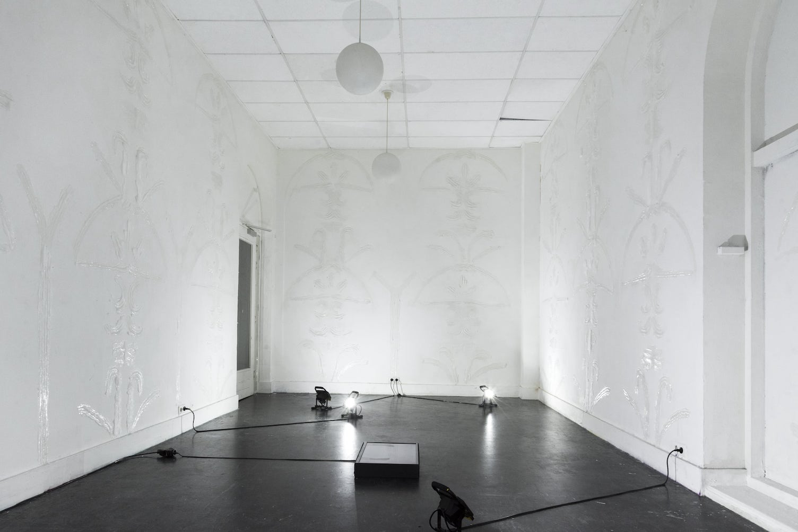
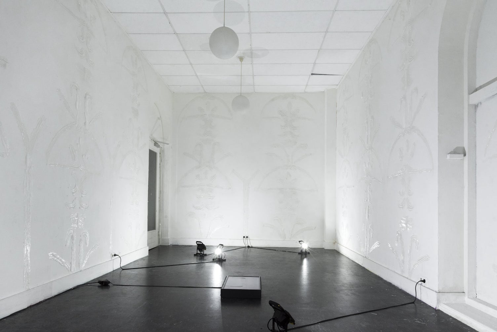

Black Disko Kollektiv
Room Divider
(2017) ↘
Room divider for the Black Disko Kollektiv furniture collection
Dissecting the simple but effective concept of echo chambers a social media phenomenon accused of so much these days, but mostly of being undeservingly successful in it’s mockery of the truth—Black Disko Kollektiv examines if the two pillars of the echo chamber, ‘lying and repetition’, can also be translated into a series of furniture that are at best very obviously not what they appear to be and at worst a loud and distasteful statement aiming to create division.
In doing so Black Disko Kollektiv, tries to channel the colourful hysteria, surrounding the rise of western populism in order to materialize some kind of unity out of all these contradictory perspectives...’Leftist Art Academy students’, entering the world of ‘dictator-chic’ and ‘decor hardcore’, having fun mirroring symbols of wealth and power..
Photography: Chloë van Diepen
Art direction/Image editing: Tessa Koot
Set design: Manon Stoeltie
Black Disko Kollektiv
Room Divider (2017)
↘ Photography: Chloë van Diepen
Art direction/Image editing: Tessa Koot
Set design: Manon Stoeltie


 
